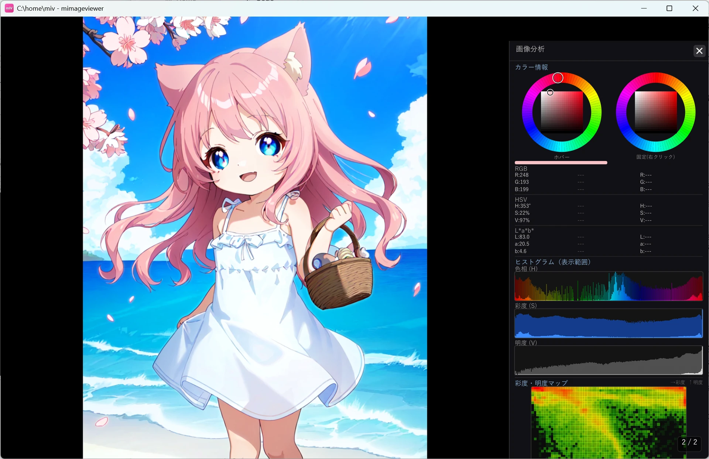
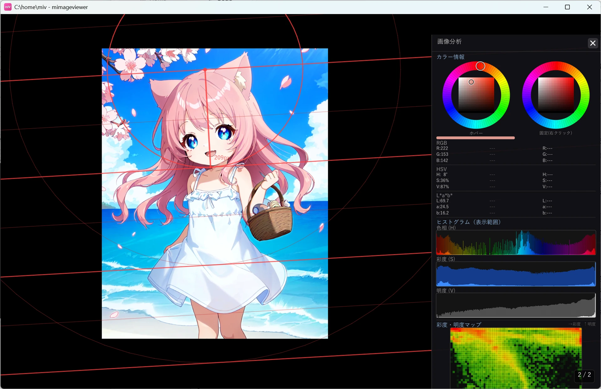
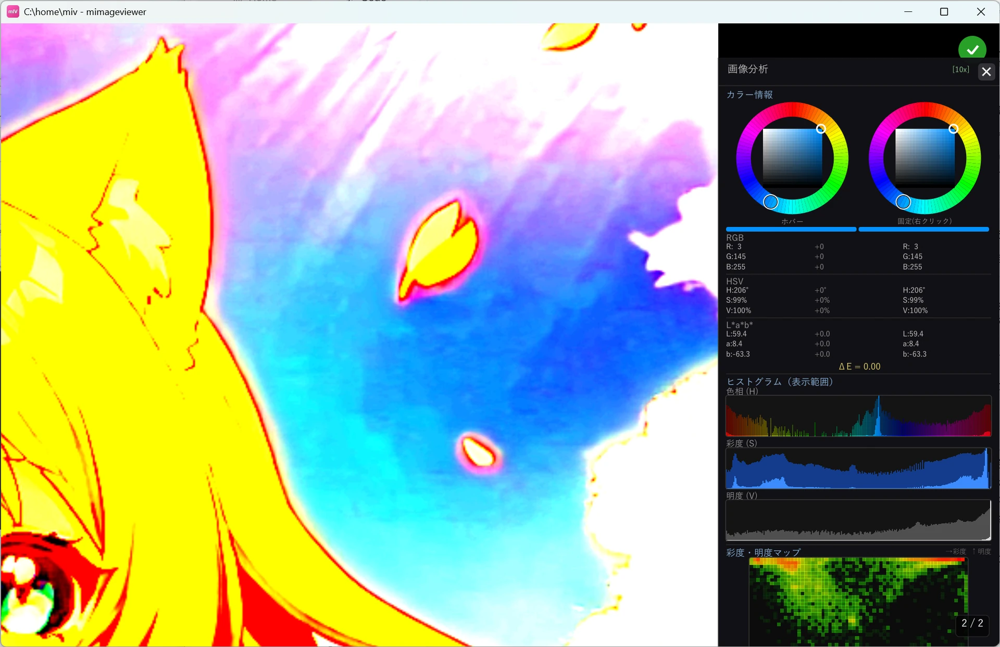

画像分析モードで色・ピクセルを調べる
イラストや写真の色を拾ったり、ヒストグラムで明暗の分布を見たり、キャラクターの等身を測ったり、 色の階調差を強調して塗りのムラを確認したりできる分析ツールです。 呼び出しは Shift+Z。よく似た Z（ズーム）と混同しやすいので、まず違いを押さえておきましょう。
Z と Shift+Z の違い
| キー | 機能 | 用途 |
|---|---|---|
| Z | ズームモード（押している間、拡大したい範囲を指定） | 細部を大きく見る |
| Shift+Z | 画像分析モードの ON / OFF | 色・ヒストグラムなどを調べる |
分析モードに入る / 出る
- Shift+Z で ON / OFF を切り替え
- 上部ホバーバーの 🔬 ボタンでも ON / OFF
- 分析パネル右上の × で分析モードだけ終了（フルスクリーンは維持）

使えるツール
画像の上にマウスを移動すればその位置の色（RGB / HSV / L*a*b*）を読み取れ、右クリックで固定した色との差も比べられます。 G でグレースケール表示、M でモザイクの目安グリッドなど、ほかにも複数のツールがそろっています。 ここでは特に使いどころの多い 等身計測 と 色差強調 の 2 つを紹介します。
キャラクターの等身を測る（スケールグリッド）
修飾キーを押しながら画像の上を左ドラッグすると、ドラッグした長さを 1 単位にした等間隔の平行線と同心円を引けます。 キャラクターの頭のてっぺんから顎までをドラッグすれば、そのまま何頭身かを目で数えられます。線の色は背景に合わせて選べます。

| 操作 | 働き |
|---|---|
| Shift + 左ドラッグ | 赤色のグリッドを描く |
| Ctrl + 左ドラッグ | 黒色のグリッドを描く |
| Alt + 左ドラッグ | 白色のグリッドを描く |
| 右クリック | 表示中のグリッドを消す |
色の階調差を強調する（色差強調）
修飾キーを押しながら画像の上を右クリックすると、その位置の色を基準に、画面全体の色の違いを誇張して表示します。 ぱっと見では気づけない塗りのムラやグラデーションの段差が、はっきり見えるようになります。

| 操作 | 強調の強さ |
|---|---|
| Shift + 右クリック | ×2（軽い強調） |
| Ctrl + 右クリック | ×5 |
| Alt + 右クリック | ×10 |
| Ctrl+Alt + 右クリック | ×20（最大） |
| 右クリック（修飾キーなし） | 強調を解除 |
分析は「加工前の元画像」に対して行われます。
明るさ・色補正、AI アップスケール、テキスト注釈、隠蔽加工、消しゴムなどを掛けていても、
分析モード中は一時的にそれらを外した状態の色・ヒストグラムが出ます。モードを抜けると加工後の表示に戻ります。
分析モード中はホイールが画像送りではなくズームになります。
通常表示で Ctrl+ホイール拡大 → Shift+Z で分析、と続けると同じ倍率・位置のまま調べられます。
全機能は画像分析モードリファレンスを参照してください。